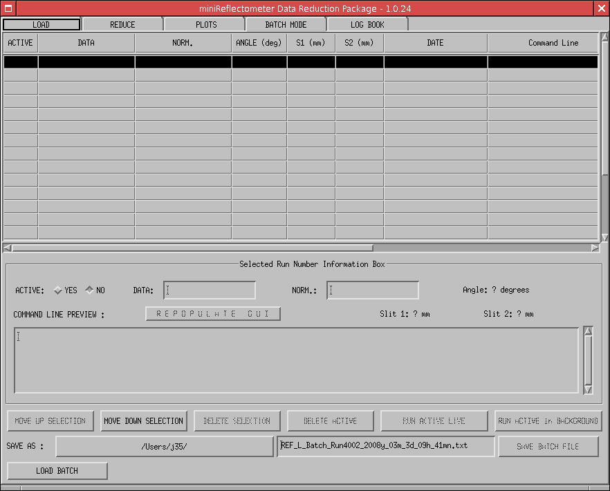

Using this GUI, it is possible to run live or in the background a set of Data Reduction.

The table is populated each time a data reduction has been run with success. It is then possible to modify the DATA and/or NORMALIZATION runs from the current selected row and re-run all the ACTIVE row or save it for later use.